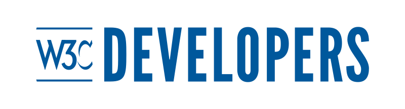
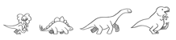

Oficina W3C España
Barcelona, 24 octubre 2016
Especificaciones:
| 2013 | 2014 | 2015 | 2016 | |
|---|---|---|---|---|
| CG/BG Groups | 128 | 193 | 205 | 245 |
| CG/BG People | >2,850 | >4,000 | 5,002 | 6,844 |
| Students (1) | 2K | 2.6K | 48K | 300K |
| Twitter followers | 62K | 84.5K | 120K | 158K |
(1) Courses’ enrolled students (W3DevCampus and W3Cx)


Test the Web ForwardMartín Álvarez Espinar
Responsable Oficina W3C España